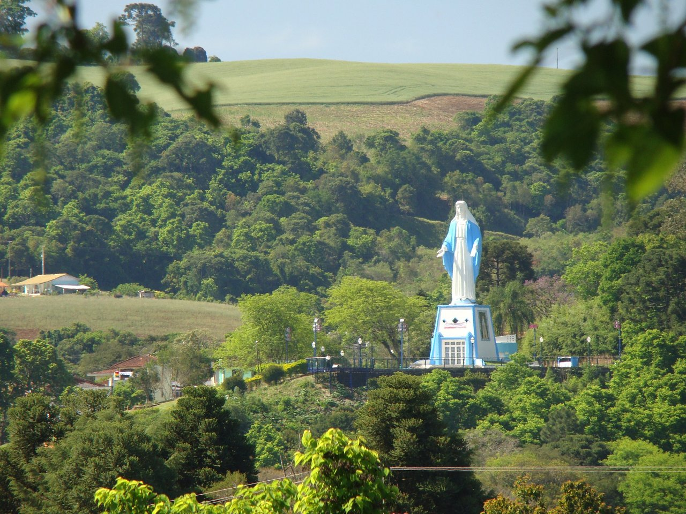
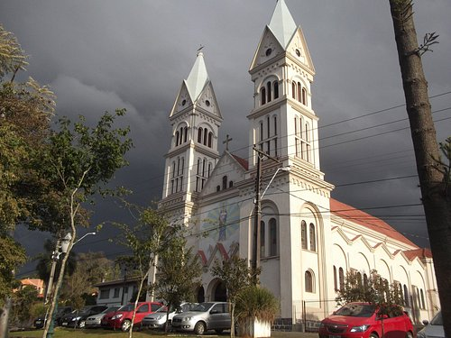
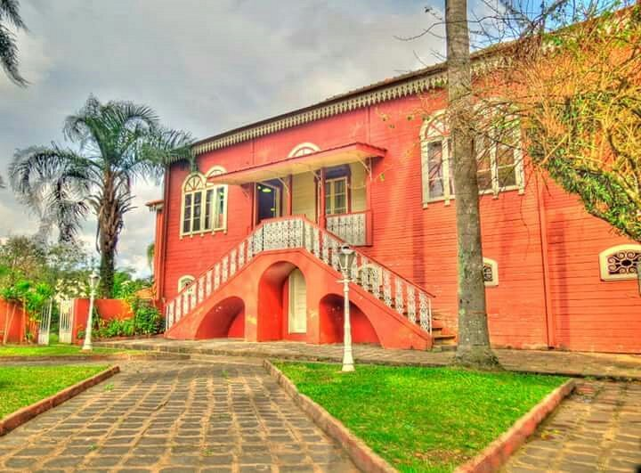

Pontos Turísticos
Parque Aquático

O melhor lugar para passear com a família em Irati!!
Santa
Ótima visita na cidade de Irati , além da bela imagem de Nossa Senhora das Graças, erguida na década de 50, tem a melhor vista da cidade.
Igreja Matriz
Igreja ampla e arejada. Esta localizada na região central da cidade. A padroeira é Nossa Senhora da Luz com festa em Setembro porem também é palco da Festa de São Cristóvão no mês de Agosto.
Museu Municipal de Irati
Excelente localização, agradável para levar as crianças. Ótimos locais para lanches muitos próximos.